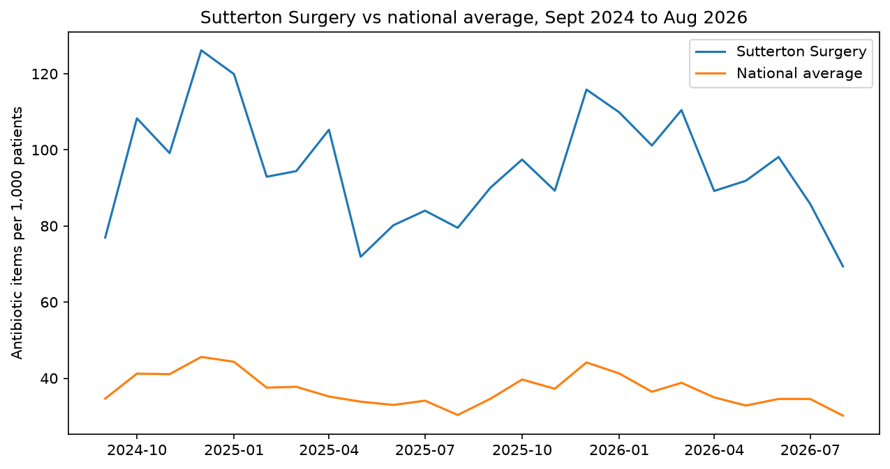

01The question
A raw prescription count mostly tells you which practices are big. Winter also pushes everyone up: nationally it runs at about 44 items per 1,000 patients in December against about 30 in August.
So I wasn't after the practices that had one bad month. I wanted the ones that were persistently high once size and season were taken out.
02The pipeline
- DuckDB as a local analytical database: free, embedded, no server.
- Idempotent loads. Each month is deleted and reinserted, so re-running a backfill never duplicates rows.
03Method
- Join prescribing to list size on practice code and month, giving items per 1,000 patients.
- Compare each practice to the national average for the same month, because prescribing is strongly seasonal.
- Flag a practice-month as high when its ratio is above 1.5.
- Call a practice an outlier only when it is high in all 24 months. That filters out one-off spikes.

04Design decisions
Each of these changed the answer, which is why they're written down.
Practice code, not ICB, as the anchor
The 2026 restructure cut ICBs from 42 to 36 and redrew boundaries, so ICB codes aren't stable across the period.
Excluded non-GP prescribers
About a fifth of prescribing rows have no registered list: out-of-hours services, walk-in centres and community services (mostly Y-prefixed codes). A per-patient rate means nothing for them.
Excluded care-home (Y-coded) services from the comparison
Care-home practices reached 8× the national rate because their patients are frail and elderly. Left in, they'd swamp the results.
Excluded practices under 1,000 patients
With very small lists, a handful of prescriptions produces extreme rates.
Grouped by practice code, not name
Names aren't unique, and 3 practices were renamed during the period. Grouping by name gave 36 or 37 outliers instead of 40.
05Data quality issues found
The source isn't consistent from month to month. Each of these surfaced during the backfill:
- The BNF code column was renamed from
BNF_CODEtoBNF_PRESENTATION_CODE. YEAR_MONTHchanged from an integer (202409) to a string ('2026-08'), so the loader stamps its own month column.- Numeric columns were stored as text in March 2025 and needed explicit casts.
- List-size files were published as zip in some months and csv in others.
06Results
The persistent outliers also cluster geographically, which matters for how you read them (see below).
07Limitations
- No adjustment for population. Age, deprivation and rurality all affect infection rates. The geographic clustering suggests some outliers reflect their patients rather than their prescribing behaviour.
- Items are a count of prescriptions, not doses or courses.
- The 1.5× threshold is a judgement call, not a clinical standard.